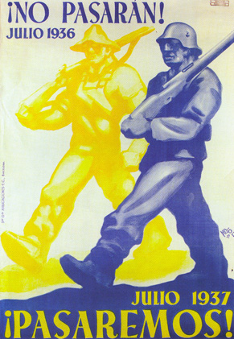
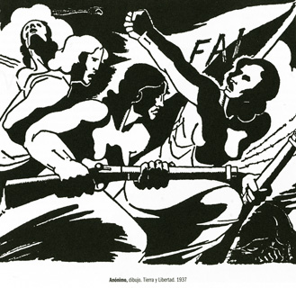
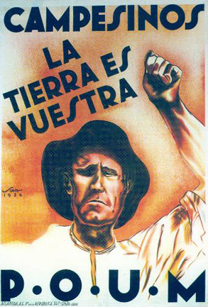
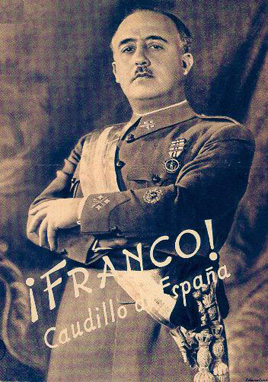

Juli 2006 – 70 år siden den spanske borgerkrigen:
Borgerkrigens labyrint
“Jeg kan ikke fordra bøker som begynner med jeg.” Slik begynner min bok Natt uten navn med handling fra den spanske borgerkrigen. Det er nå sytti år siden verdens øyne brått ble rettet mot Spania der et blodig fascistisk militærkupp, ledet av generalene Franco og Molina, var i emning.
I likhet med Rosa Villena Måholm, min fiktive pilot fra Norge som via en jobb som tolk for deltagerne i den norske olympiatroppen til Barcelona i 1936 blir blandet inn i kampene, oppdager vel også jeg at svært mye egentlig begynner med et “jeg”.
Dersom ikke individet sjøl tar ansvar for seg og sitt liv vil noen andre ta det fra henne eller ham. Og dersom en ikke leter etter sannheten og hevder sin mening vil andre definere og mene for en.
Noen ganger kan vi riktignok ikke hjelpe for hvordan det går. “De andre” og deres definisjoner av rett og galt seirer uansett hvor hardt vi kjemper og roper ut ¡No pasarán! og prøver å nekte dem å passere vår forsvarslinje… Men det betyr ikke at vi ikke må prøve.
Og så må det kanskje begynne med et “jeg” enten vi kan fordra det eller ikke.
Den spanske borgerkrigen ble ei ren heksegryte av motstridende krefter og interesser, der fascistene på sett og vis ble den enkleste fienden. De hadde sine støttespillere også, Mussolini og Hitler naturligvis, men mer subtilt også England og Frankrike som ved sin “Non-Intervention Pact” med Tyskland og Italia kynisk valgte å håpe på at de spanske anarkistene og kommunistene på den ene siden og fascistene og nasjonalistene på den andre skulle svekke og helst bortimot utslette hverandre.
Winston Churchill, den etter den andre verdenskrig i Norge nesten helgenforklarte britiske statslederen, avslører i sin egne bøker helt uten den minste blygsel hvor han og hans medreaksjonære politikere sto i “Spania-spørsmålet”.
Han medgir at en fascistisk seier i Spania vil være ille, men i neste øyeblikk sier han også ganske rett ut at “a Communist Spain threading its tentacles through Portugal and France” i manges øyne ville vært verre. Tydelig nok er han sjøl også en av disse “mange”.1

¡No Pasarán!
– De skal ikke slippe forbi oss!
Interessant nok skriver han dette i ei bok som kom ut etter at ikke bare England var i krig med Tyskland, men også etter det tyske angrepet på Sovjet! Og han bekrefter det noe spesielle synet han og hans medkonservative har på “demokrati” og krigen i Spania i det første bindet av sitt tolvbinds (!) verk om den annen verdenskrig.2 Der henger han også i verkets andre bind mer enn villig ut Chamberlain for hans politikk vis-à-vis Tsjekkoslovakia, mens han i Englands forhold til Spania samtidig er merkelig taus om det kapitalistiske Europas forræderi mot det spanske folket.
Ved sin handelsblokade mot den spanske republikken spilte nemlig England, USA og Frankrike det hele opp i hendene på nettopp det Sovjetunionen som de på det tidspunktet tydeligvis så på som en verre trussel enn Tyskland.
Et velkomment favoritt-scenario fra disse landenes side var helt sikkert en krig mellom Sovjet og Tyskland der de to partene ville forblø så mye at de ikke på lenge ville utgjøre noen trussel mot Vesten. Slik det faktisk var i ferd med å skje mellom partene i borgerkrigen i Spania…
Spania var imidlertid et på mange måter utypisk land i Europa. I den kampen om arbeiderklassens politiske sjel som startet med konfliktene i Den Første Internasjonale mellom Karl Marx og Mikhail Bakunin ble til dels Italia, men enda mye mer Spania, land der arbeiderklassen tidlig valgte i temmelig stor grad å ta anarkistenes parti. Det endret seg etterhvert i Italia, men ikke i Spania.
Og vil man ikke ta en norsk radikalers ord for hva det var som skjedde, så kan man jo velge å lese den ganske så kritiske Gerald Brenans beskrivelse av disse begivenhetene.3
Den virkelige ideologiske drivkraften i spansk anarkisme ble i fortsettelsen likevel ikke Bakunin, men en annen russisk anarkist, Pjotr Krapotkin, bl.a. med sin bok La conquista del pan4 som framsatte teorien om en anarkistisk frihetlig kommunisme.
Den sterkeste drivkraften i den revolusjonen som fulgte hakk i hæl med utbruddet av borgerkrigen i så godt som hele den delen av Spania som greide å stå imot det fascistiske militærkuppet var Spanias største fagorganisasjon, den syndikalistiske Confederacion Nacional del Trabajo (CNT) og den anarkistiske organisasjonen Federacion Anarquista Iberica (FAI). Begge disse organisasjonene hadde sin sterkeste folkelige støtte i Katalonia i nordøst og Andalucia i de sørligste delene av landet, mens det sosialdemokratiske Union General del Trabajo (UGT) hadde sin største støtte i Castilia midt i landet og Extremadura i vest. I nordvest sto naturligvis de baskiske nasjonalistene sterkt, men det var også mot nord man fant mange bønder og landarbeidere som støttet CEDA, det katolske partiet.
Spania var i det hele tatt et ganske merkelig lappeteppe av organisasjoner, ideologier og meninger.

“Anónimo, dibujo. Tierra y Libertad. 1937.”
Det spanske kommunistpartiet PCE var i utgangspunktet, etter spanske forhold, et ganske ubetydelig parti med knapt tjuefem tusen medlemmer, og sjøl på det meste hadde partiet aldri mer enn hundre tusen medlemmer.5
Så dersom Churchill & Co. hadde som et storpolitisk bakenforliggende motiv for sin “non-intervensjon” å hindre kommunismen i sin sovjetiske versjon i å finne fotfeste i Spania, så virket deres politikk temmelig mot sin hensikt.
Ved å gjøre Sovjetunionen til den spanske republikkens eneste allierte i Europa og eneste større våpenleverandør, gjorde de borgerkrigen etter hvert mer og mer til en kamp ikke mellom spanske fascister og militære og spanske anarkister, syndikalister, sosialister og republikanere, men mer og mer mellom en borgerlig-sosialistisk republikk, militært og politisk støttet av Moskva, og et fascistisk, royalistisk og katolsk diktatur med generaler og falangister med støtte fra Berlin og Roma.
En av de første historikerne som virkelig våget seg inn i den hengemyra av politiske påstander og motstridigheter som har preget ordkrigen mellom kommunister og anarkister og syndikalister om Sovjetunionens rolle i borgerkrigen var Burnett Bolloten.6 I motsetning til Hugh Thomas’ temmelig tradisjonelt borgerlig-intellektuelle tilnærming til krigen, prøver Bolloten på en helt annen måte å vurdere krigens ideologiske karakter. Og krigen hadde virkelig ikke to parter, men minst tre.
Det var ikke militære styrker lojale mot republikken som stoppet Francos militære opprør i mer enn halve Spania. Det ble stoppet av folket, ledet og inspirert av menn og kvinner som var fagforeningsaktivister, anarkister og sosialister. Ikke minst var kvinnene aktive deltagere i den væpnede motstanden!
De fleste av disse aktivistene hadde gått en hard skole, med revolusjonær virksomhet gjennom flere år. Nå da de brått var blitt “herre i eget hus” i byer som f.eks. Barcelona nølte særlig CNT og FAI ikke et øyeblikk med å sette sine revolusjonære anarkosyndikalistiske ideer ut i livet.
Omtrent over natta overtok arbeidere organisert i CNT i Katalonia bedriftenes styre med et program som likevel forsøkte å ta hensyn til at sjøl om det nok var et flertall for slike reformer i Barcelona og andre steder der CNT sto sterkt, så var ikke dette tilfelle over alt ellers.
Likevel var det klart at mange borgerlige republikanere så med mistenksomhet på den revolusjonen som foregikk, og så skjedde det ganske merkelige at kommunistpartiet i folkefrontens navn gikk imot arbeiderstyre i bedriftene og ble republikkens fremste forsvarere av privat eiendom til produksjonsmidlene! For det fikk de mange nye tilhengere, skjønt kanskje ikke de som de helst ville hatt…
Og hva var Sovjets rolle i dette?
Med våpenforsendelsene kom ikke bare instruktører, piloter og tanksførere, men også diverse “rådgivere” med en etter hvert ganske anseelig kontingent av folk fra NKVD, det russiske hemmelige politiet.
Det er sjølsagt ingen tvil om at mange sovjetere som kom til Spania kjempet mot fascismen med mot og besluttsomhet, og de har også interessante historier å fortelle fra sin tid i Spania7, men de hadde også ofte en dobbeltrolle. Deres rolle var jo aldri bare militær, den var også politisk. Enkelte av dem opptrådte mot spanjolene som om de var en slags “store politiske barn” som det var deres plikt å oppdra til sin egen korrekte politiske tenkning.
Et Spania i begeistring hadde med Vernon Richards ord “vunnet revolusjonen” og beseiret fascistene i mesteparten av landet.8 Men nå da gevinsten av denne dyrekjøpte seieren skulle innkasseres og føres videre ved å ta tilbake også resten av Spania meldte vanskene seg. Det største problemet var i utgangspunktet mangelen på våpen. “Non-intervensjonen” mellom England, Frankrike, Tyskland og Italia hindret blant annet Frankrike i å levere flyene de alt hadde lovt å sende til republikanerne, mens den sjølsagt slett ikke hindret verken Tyskland eller Italia om å sende både våpen og frivillige til Franco.
Sovjetunionen tilbød derimot å selge våpen til republikken, og ble den eneste nasjonen som gjorde det utenom Mexico.9 Det virker egentlig temmelig patetisk når f.eks. Einar Gerhardsen i sin erindringsbok fra åra før annen verdenskrig skriver om sin reise til Spania og omtaler både norske frivillige og engasjementet for republikken i arbeiderbevegelsen i Norge. Når Norge i likhet med andre vestlige demokratier var feige nok til å boikotte det revolusjonære Spania til tross for at “alle” visste at Tyskland og Italia brøt den samme boikotten ved å ikke bare selge, men gi store mengder våpen og utstyr til Franco.
I tillegg hadde norske myndigheter også gjort det ulovlig for folk å reise til Spania for å melde seg som frivillig til de internasjonale brigadene, og at et sted mellom to og tre hundre norske likevel illegalt reiste avgårde for å kjempe mot fascismen, kan de være stolte av og datidas regjering og politikere skamme seg ved.
At de internasjonale brigadene så ble politiske redskaper i de indre stridighetene på venstresida i Spania skal ikke de vanlige arbeiderne som reiste dit ha noen som helst skyld for. De var stort sett modige og ærlige mennesker som reiste med de aller beste intensjoner, og de fleste sloss med livet som innsats mot en etter hvert overmektig fiende.
Ganske mye stygt har vært sagt og skrevet om de internasjonale brigadene, og sjølsagt aller mest av Franco-apologister som Ricardo de la Cierva9 og andre. Men etter hvert har jo også andre kastet seg på og mer eller mindre sannferdig skrevet om dem, ofte på en måte Spania-kjemperne nok slett ikke ville kjent seg særlig mye igjen i.
Men at de ble politisk og militært utnyttet både av den spanske republikanske regjeringa og av NKVD og PCE, er nok også temmelig sikkert. De ble gjerne hoggestabber når ting gikk galt, og de ble stadig satt inn i kamper der de var både for dårlig utstyrt og dårlig bemannet.
Kommunistpartiet i sin iver etter å “forene” endte ofte heller med å splitte, som når Lister-batajonen ble sendt ut for å beskytte privateiendommens ukrenkelighet ved å legge ned kollektiver i landsbyer der et flertall av befolkninga hadde valgt å opprette slike!
Kollektivene fungerte stort sett godt og var uttrykk for en lokal vilje til nytenkning og økonomisk demokrati som mange fremdeles kunne lære av!11

POUM – Partido Obrero de Unificacion Marxista
En ødeleggende politisk eksportvare fra Stalins Sovjet som fulgte med på lasset var skrekken for og det ubønnhørlige hatet til “trotskismen”. I tillegg til det vanlige kommunistpartiet hadde også Spania et lite uavhengig marxistisk parti, Partido Obrero de Unificacion Marxista (POUM). Udødeliggjort blant annet gjennom George Orwells Homage to Catalonia og Ken Loachs film Land og frihet.
Til tross for marxismen – plagsomt dogmatisk marxisme ifølge Orwell - var POUM ofte i mange sammenhenger samarbeidspartner for CNT og FAI, og som kjent kan det ofte være effektivt og også temmelig ufarlig å slå klokkeren når man vil treffe presten.
Det er greit at stalinister kanskje ikke leser Trotskij, men alt av kameratskap mellom POUM og dets leder Andres Nin på den ene siden og Leon Trotskij på den annen opphørte faktisk allerede i 1934. I en artikkel den niende november det året fordømmer Trotskij “lederklikken” i POUM i sterke ordelag og tar fullstendig avstand fra dem. Ingen ting tyder på at de noen gang ble tatt inn i varmen til Trotskijs “fjerde internasjonale” igjen.12
Stalinismens metoder og politikk overført fra Sovjetunionen til borgerkrigens Spania kan neppe kalles noe annet enn ett av sosialismens histories minst vellykkede “omplantinger”. Dersom man da ikke regner det som en suksess at man ødela samholdet i et noenlunde fungerende anarkistisk, syndikalistisk og sosialistisk politisk og militært fellesskap og derved også fratok den spanske revolusjonen dens mulighet til å lykkes.
Det var mye protest fra kommunister og andre på den tolkninga av Sovjetunionens rolle i borgerkrigen som Bolloten og andre gjorde seg til talerør for. Andre syntes det gikk an å gå enda lenger enn Bolloten.
En av de mest sviende anklager både mot kommunister og til og med en del anarkister – fordi de henholdsvis saboterte revolusjonen og mer eller mindre motstrebende “i samarbeidets ånd” lot det skje – kommer fra Felix Morrow, hvis sympati entydig og sint ligger hos POUM:
*The Spanish Rulers, with support from other imperialist powers turned to general Francisco Franco’s military and fascist forces to strike back at the proletarian revolution. They were aided by the counterrevolutionary efforts and thuggery of the Stalinist leadership of the Communist Party.*13
Sovjetunionen fikk en både dobbel- og trippelrolle i den spanske borgerkrigen.
Russerne var velkomne leverandører av våpen, materiell og flygere og tanksførere til I-15 og I-16 jagerfly, SB bombefly og T-26 tanks. Men med på det lassert kom også agenter og politiske rådgivere og “eksperter” som på de fleste områder gjorde langt mer skade enn gagn ved sitt splittende intrigemakeri og sine forsøk på å ta kontroll over den politiske utviklinga.
Sovjeterne demonstrerte ofte en urokkelig marxist-leninistisk “bedrevitenhet” og foruroligende mangel på djupere innsikt i spansk politisk virkelighet og i det sosiale og ideologiske grunnlaget for motstanden mot Francos militærkupp.
Fra sovjetisk side såvel som fra regjeringa i Madrid ble det drevet et temmelig mislykket storpolitisk spill som tok sikte på å gjøre Republikken og borgerkrigen stuerein for England, Frankrike og andre vestlige demokratier. Hovedsakelig ved etterhvert å undertrykke og ødelegge den politiske revolusjonen i Spania, for så å framstille krigen som bare et rent forsvar mot et fascistisk kupp mot “den lovlig valgte spanske regjering”.
Mye er blitt skrevet og sagt om dette bedrøvelige maktspillet som av mange kommunister og borgerlige intellektuelle vanligvis i neste øyeblikk er blitt avfeid som oppspinn og spekulasjoner. Men nå er svært mange av “påstandene” blitt dokumentert blant annet gjennom det innsynet man har fått i gamle sovjetiske kartoteker.
En del av dette materialet er tilgjengelig gjennom boka Spain Betrayed – The Soviet Union In The Spanish War, redigert og sammenfattet av Ronald Radosh, Mary R. Habeck og Grigory Sevostianov.14
En kan jo si at angrepet på og forbudet mot POUM var en generalprøve på det som skulle komme: Den fullstendige demonteringa av den sosiale revolusjonen, militarisering av folkemilitsen, kvinnene som ble forbudt å bære våpen ved fronten (!), i det hele tatt ei lang rekke reaksjonære tilbakeslag for det folk i julidagene 1936 hadde kjempet for. Alt pussig nok i navnet til “kampen mot fascismen”. Men hvordan kunne man egentlig tro at en ved å ta fra folk det de hadde kjempet for og oppnådd skulle kunne gi nytt liv til selve krigen?
Skiftet i makt var etter hvert klart synlig i gatene i Barcelona. En kunne ikke lenger se bevæpnet arbeidermilits i gatene, i stedet så man vanlige soldater med geværer på hvert eneste gatehjørne, omtrent som før borgerkrigen. Til og med gatebildet var endret og viste hvordan fagforeningenes makt var svekket. Arbeiderklassens vanlige antrekk var i de sentrale distriktene byttet ut med borgerskapets eller småborgerskapets dresskodeks. Det røde og svarte som hadde prydet både bygninger og mennesker var borte. Flagg, skjerf, luer, plakater i CNTs farger var så godt som fraværende.
Småborgerskapets makt hadde sivet inn i bygatene som en sakte visuell kontrarevolusjon.
Kanskje hadde regjeringa og de politiske partiene “glemt”, i sin iver etter å forene alle krefter i kampen mot fascismen, at folk ikke bare trenger å vite at de må kjempe mot noe, de må også vite at det er noe de kjemper for.
Da Francos tropper til sist trampet inn i Barcelonas gater møtte de ingen særlig motstand, bare resignasjon.

Francisco “El Caudillo” Franco.
Den spanske borgerkrigen vil alltid forbli et diskusjonstema. Det var kanskje for ikke å vekke et i borgerskapets øyne farlig, fengslet og såret revolusjonært “dyr” at Spania – da nazismen og fascismen ellers i Europa hadde tapt – mer eller mindre stilltiende ble latt “i fred”. En fred som fremdeles kostet spanske motstandere av Franco-regimet både liv og helse. Det er neppe noen overdrivelse når en kilde beskriver Spania under fascismen som “et stort fengsel”.15 Et fengsel som på femtitallet åpnet sine strender og sin solrikdom for politisk stupide turister ikke minst fra Norge og Sverige, hvis jakt på solbrunhet etterhvert ble en god inntektskilde for fascistene og helt sikkert hjalp regimet til å overleve.
El Caudillo Franco hadde alltid vært mer general og katolikk enn egentlig fascist, og det var først og fremst av praktiske og opportunistiske årsaker at han allierte seg med de spanske fascistene.
Faktum var at også de egentlige “ideologiske” fascistene i den såkalte Falangen etter borgerkrigen ganske rolig og forsiktig ble skjøvet inn i bakgrunnen.
Men under borgerkrigen var alliansen mellom fascistene og militaristene til gjensidig nytte og glede… ikke minst fordi den skapte bånd til Hitler og Mussolini som rundhåndet bidro med soldater og våpen.
Borgerkrigen i Spania ble til gjengjeld særlig for tyskerne en viktig generalprøve for den krigen som skulle komme senere.
Det er ingen tvil om at tyske og italienske soldater, tanks og fly var ganske avgjørende for utfallet av borgerkrigen. Uten italienske og tyske transportfly ville ikke en gang Francos nordafrikanske troppestyrker hurtig og effektivt kunnet krysse Gibraltar-stredet på den måten det skjedde!
*“Ved slutten av borgerkrigen så Franco, Hitler og Mussolini ut til å ri på framtidas bølge. Der Führers eksperiment i Spania syntes på alle måter å ha vært en triumf."*16
Men da det kom til stykket sviktet Franco sine utenlandske fascist-venner, og Spania ble aldri en særlig aktiv deltager i den annen verdenskrig, slik utvilsomt både Mussolini og Hitler ønsket. Det nærmeste det fascistiske Spania kom til å støtte sine tyske venner var å sende den “Blå divisjon” for å kjempe mot Sovjetunionen på østfronten i 1941. I alt 47 000 spanske frivillige deltok i noe de antakelig trodde skulle bli en ganske kortvarig operasjon mot Russland. Slik gikk det jo som kjent ikke. Allerede i 1943 begynte en gradvis tilbaketrekking og hjemsending av de frivillige i Divición Azul.
Krigen i vest blandet imidlertid Spania seg aldri inn i…. Kanskje fordi Franco ikke hadde glemt sine andre venner, amerikanske og europeiske kapitalister som trofast hadde forsynt ham med blant annet olje og andre nødvendigheter i hans krig mot “de røde”?
Allerede ved slutten av året 1936 var den delen av Spania som fascistene kontrollerte i god kontakt med den internasjonale finansverdenen. Deres pesetas var dobbelt så mye verd som den republikanske, de hadde god tilgang på mat, og hadde spanske bankierers og finansfolks ubetingede støtte. De kunne handle internasjonalt uten restriksjoner og viktigst av alt – de hadde Texas Oil Company (TEXACO) som forsynte dem med den oljen de trengte til sin krigføring!
Kanskje det var ei årsak til at Spania senere ikke på noen måte ønsket å gå med i verdenskrigen på tysk og italiensk side mot “Vesten”? Nøytraliteten deres ble etter hvert både lønnsom forretning og god “realpolitikk”.
Og var det kanskje som “betaling” for denne noe frynsete nøytraliteten at Spania fikk lov til å forbli ei anti-demokratisk øy av brutal undertrykking helt til Francos død i 1975? Allerede i 1953 kom nemlig belønninga fra USA i form av en såkalt støtteavtale som for alvor brakte Franco-Spania inn i varmen.
Falangen på sin side var like fra begynnelsen et temmelig ustabilt politisk prosjekt, drevet av ideer om nasjonalistisk grandeur og en ideologisk lapskaus av innbyrdes motstridende elementer hentet fra både den politiske høyre- og venstresida. Ved alliansen med Franco ble Falangen slukt med hud og hår av høyresida til alt som var tilbake var machismo, nasjonalistisk rasisme og imperialisme, og en slagordpreget “tyrefekter”-retorikk fylt av romantisk “ære” og dødskultus.
En ganske forvirret men til tider ganske underholdende versjon av dette gis i boka Det ariske idol om den norske fascisten Per Imerslund og hans Spania-opplevelser.17
Etter annen verdenskrig ble det temmelig klart at Spania beveget seg hurtig i retning av å bli et “normalt” militærdiktatur uten noen særlige ideologiske overbygninger ut over nasjonalisme og militarisme.
Falange Española de las Juntas de Ofensiva Nacional Sindicalista (F.E. de las J.O.N.S.), det spanske fascistpartiet, skulle i navnet være et slags statsbærende parti under Franco-regimet, men i virkeligheten var “blåskjortene” skjøvet helt i bakgrunnen alt i 1945. Utover på femtitallet hadde medlemmer av partiet kun noen få prosent av de ledende vervene i den spanske statsadministrasjonen.18 Dette samme partiet som hadde opplevd en ganske eventyrlig vekst i den nasjonalistiske delen av Spania, en vekst som langt overgikk den kommunistpartiet hadde i den republikanske delen av landet!19
Så hva ble det endelige resultatet av den spanske borgerkrigen? Var den bare et nytteløst og grusomt blodsoffer hvis ideologiske skillelinjer har dømt oss til fra hvert vårt ståsted alltid å finne fram til de samme lærdommer og de samme motsetninger og tolkninger av fakta?
I den norske ukeavisa Friheten har man nå kjørt to artikler av Anton Nilsen sakset fra danske Kommunist. Den er hovedsakelig interessant ved sin totale mangel på bruk av noe av det nye materialet som etter hvert er kommet fram om borgerkrigen og om Sovjetunionens til tider temmelig pinlige rolle i den.
Men for mange er Sovjet fremdeles det “sosialistiske fedreland”, og Sovjetrikets temmelig lite gloriøse forfall og undergang har for disse kun resultert i en nostalgisk lengsel tilbake til den gang da Sovjet var stort og mektig og ledet av den sterke, kloke og (om nødvendig) nådeløse Josef Vissiarovitsj Stalin.
Jeg er slett ikke helt fremmed for å forstå dem, uansett om jeg er uenig. Verden er blitt et så, politisk sett, ufyselig sted etter at USA og turbokapitalismen har “seiret på alle fronter” at man nok gjerne kan ønske seg tilbake til ei tid da det fantes en mer jevnbyrdig motvekt og mer balanse mellom makter.
Men skulle den balansen ha blitt besørget av et sterkt Sovjetunionen skulle jeg nok også ønsket at det ville kunne skje i et langt friere og åpnere Sovjet enn det enkelte kommunister tydeligvis ønsker seg. Noe som liknet i det minste litt på det Mikhail Gorbatsjov så alt, alt for seint prøvde å få til, heller enn på Josef Stalins brutale politiske enevelde.
Men det er en helt annen sak, og en helt annen debatt. En om hva som gikk galt med Sovjet og når og hvorfor.
I en slik debatt kunne vi til og med fort ha havnet i en diskusjon som ville føre oss enda lenger bakover i historia enn til den spanske borgerkrigen! Helt til Kronstadtopprøret, Nestor Makhno og Aleksandra Kollontajs “arbeideropposisjon”?
Friheten bruker ganske ofte den frihetlige sosialisten Noam Chomsky som “sannhetsvitne” mot det de misliker i verden, og det har jeg sjølsagt ingen ting imot. Men da burde de kanskje også lese det allerede nevnte essayet “Objectivity and Liberal Scholarship”.20, et essay som blant annet også inneholder en knusende kritikk av den linja det spanske kommunistpartiet valgte: Kamp mot kollektivene, kamp mot revolusjonen. Deres standpunkt var at man måtte velge mellom krig og revolusjon. Til det svarte italieneren Camillo Berneri:
“Dilemmaet krig eller revolusjon har ingen mening. Det eneste dilemmaet er dette: Enten seier over Franco gjennom revolusjonær krig, eller nederlag.”
Historia har, slik jeg ser det, gitt Berneri helt rett.
Fotnoter:
- W. Churchill, Step by Step 1936-1939, s. 52, Macmillan 1942.
- W. Churchill, Den annen verdenskrig, Cappelen 1948.
- Gerald Brenan, The Spanish Labyrinth, Cambridge University Press 1967.
- Se bl.a. José Peirats Los Anarquistas en la crisis politica española, Ediciones jucar, Madrid 1976. Engelsk utgave av Krapotkins bok: P. Kropotkin, The Conquest of Bread, Benjanin Blom, New York 1968.
- Hugh Thomas, The Spanish Civil War, Penguin Books 1965.
- Burnett Bolloten, The Spanish Civil War: Revolution and Counterrevolution, University of North Carolina Press 1991.
- Bajo la bandera de la España republicana (Recuerdan los voluntarios soviéticos participantes en la guerra nacional-revolucionaria en España), Editorial Progreso, Moskva. ukjent utgivelsesår.
- Vernon Richards, Lessons Of The Spanish Revolution, Freedom Press 1972.
- Mexico sendte for rundt 2 millioner dollar i våpen og ammunisjon til Republikken.
- Ricardo de la Cierva, Brigadas Internacionales 1936-1996, La verdadera Historia, Editorial Fenix, Madrid 1997.
- En omfattende studie av kollektivene og deres skjebne finnes i Gaston Levals Collectives in the Spanish Revolution, Freedom Press, London 1975.
- Leon Trotsky, The Spanish Revolution (1931-39), artikkelsamling, Pathfinder Press, New York 1973.
- Felix Morrow, Revolution & Counter-Revolution In Spain, Pathfinder Press 1996.
- Yale University Press, New Haven and London, 2001.
- Rudolfo Serrano og Daniel Serrano, Toda España era una cárcel, Circulo de Lectores, Barcelona 2002.
- Robert H. Whealey, Hitler and Spain, University Press of Kentucky 1989.
- Emberland og Roughtvedt, Det ariske idol, Aschehoug 2004
- Stanley G. Payne, Falange, a History of Spanish Fascism, Stanford University Press 1961.
- FE de las JONS hadde maks 75 000 medlemmer i juli 1936, mens det ved krigens slutt hadde nær en million.
- Noam Chomsky, American Power and the New Mandarins, Pelican Books 1969.
Mer om romanen Natt uten navn finner du her:
http://www.forfatter.net/knudtsen/boker/nattutennavn.shtml
Se også disse artiklene: